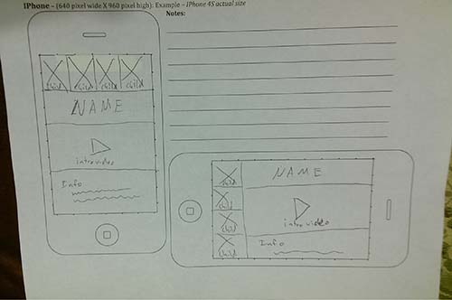
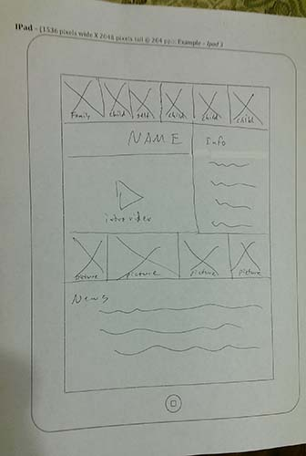
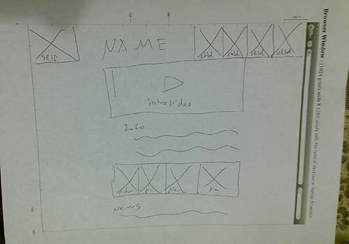

Project Proposal
Project Purpose
This project will introduce each of my children. It will provide the user with updated information about the personalities of each of my children as they grow and evolve, as well as current events in their lives.
The Audience
The audience will be friends and family who are interested in the growth and development of my children, but are no longer able to watch them grow since we moved away to Idaho for me to go to school.
The demographics vary greatly. The visitor could be a homemaker staying home with small children who want to see a recent picture of their nieces and nephew. They might even show the picture to their small child and read the child information about their cousin and how they are doing in Idaho. The visitor could also be an uncle or grandfather looking up information about their grandkids at work, or a teenage cousin looking up information about their cousin while at school.
The site meets the needs of the Visitor by showing them the introduction video first as it is the most personal media available before listing current information and showing recent photos.
The site will be adjusted for the mobile experience by only showing the video above the fold so that if that is the only thing a mobile visitor sees, they will be satisfied with the most descriptive piece of information.
- Persona
- Homemaker
- Photo
- Fictional Name
- Wendy Gunn
- Job Title / Major Responsibilities
- Homemake - Raising small children
- Demographics
- A hard working woman trying to take care of the basic neccessities of her home and her family.
- Goals and Tasks
- To distract her little ones when they are rambunctious
- To make her little ones feel like they are still connected to their cousins in Idaho
- To calm her little ones when they are upset
- Environment
- Things can get hectic with small children who have a lot of energy
- Quote
- "Stop coloring on the walls, here, look. It's your cousin. Isn't she so pretty and growing up so fast?"
Web Pages
- A “Home Page” will contain some background information about my family and why we don’t live near the rest of our family anymore.
- An “Aurora” Page will contain information about Aurora’s likes, interests and current events in her life pulled from a JSON file as well as a short video introduction.
- An “Ariel” Page will contain information about Ariel’s likes, interests and current events in her life pulled from a JSON file as well as a short video introduction.
- An “Ella” Page will contain information about Ella’s likes, interests and current events in her life pulled from a JSON file as well as a short video introduction.
- A “Triton” Page will contain information about Triton’s likes, interests and current events in his life pulled from a JSON file as well as a short video introduction.
- A “Jasmine” Page will contain information about Jasmine’s likes, interests and current events in her life pulled from a JSON file as well as a short video introduction.
Usability Concepts
I will adjust font sizes to make it easier to read on different devices, apply appropriate ALT tags to every image, make interactive elements consistent and apparent, include clear and descriptive headings, and clear and concise main copy.
Wireframe Sketches
- Small Wireframe
- 
- Medium Wireframe
- 
- Large Wireframe
- 